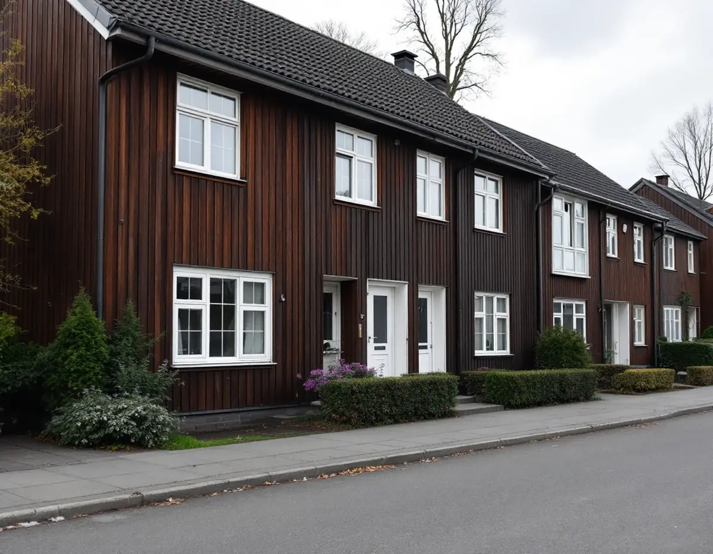
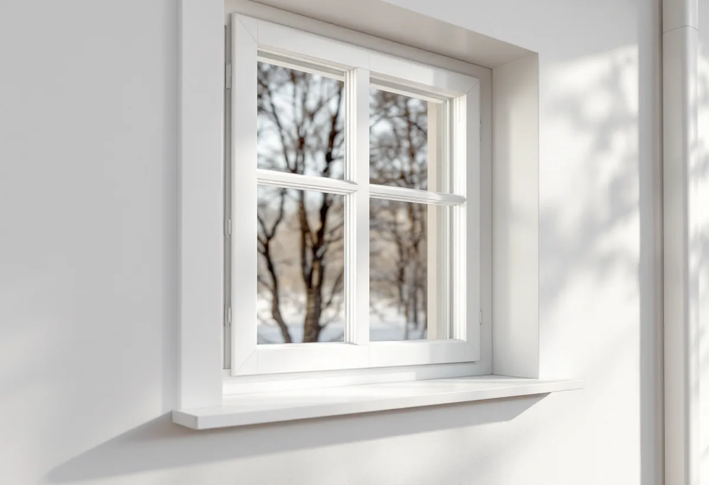

Platsbesök
Vi noterar vilka rum som vetter mot inflygning, väg eller spår.
I Upplands Väsby kommer ljudet från tre håll: inflygningen till Arlanda, E4 och järnvägen. Kommunen påpekar att fastighetsägaren själv ansvarar för att fönstren håller god kvalitet. Geal Entreprenad AB byter och renoverar fönster i villor och radhus i Bollstanäs, Runby, Grimstaby och resten av Väsby och lämnar ett skriftligt kostnadsförslag efter ett gratis platsbesök.

Upplands Väsby kommun beskriver att det främst är inflygningarna söderifrån som ger flygbuller: till bana ett över Runby och till bana tre över Väsby centrum, Sigma och Löwenströmska sjukhuset. Delar av kommunen kan också påverkas av startande plan. Normalt får bana tre inte användas efter klockan 22, men miljötillståndet tillåter undantag för flygsäkerhet och banarbeten.
Swedavia redovisar villkoren för flygvägarna. Inflygningar som undviker Väsby tätort ska användas när det går utan att flygsäkerhet eller kapacitet påverkas. Vid inflygning till bana 01L får tätorten inte överflygas öster om banans förlängning lägre än 750 meter, och nattetid får avgående trafik från bana 19L inte lämna utflygningsvägen mellan Väsby och Vallentuna förrän den nått 3 050 meter.
Kommunen skriver att den inte kan bestämma hur planen flyger. Klagomål går i första hand till länsstyrelsen, som har tillsynen, men Swedavia kan svara på om det förekommit avvikande flygningar.

En stor källa till buller i Väsby är enligt kommunen väg- och järnvägstrafiken. Kommunen skriver att fastighetsägare har en skyldighet att se till att fönstren håller god kvalitet och underhålls för att undvika bullerstörningar. Den som upplever att fastigheten är bullerstörd kan vända sig till den som ansvarar för vägen och fråga om bullerskydd för fasaden. De flesta gator i tätorten är kommunens, medan Trafikverket ansvarar för E4 och andra större vägar.
För bedömningen av buller inomhus hänvisar kommunen till Folkhälsomyndighetens allmänna råd. Där anges 30 dB som ekvivalent ljudnivå och 45 dB som maximal ljudnivå, och råden gäller rum för sömn, vila och daglig samvaro i både permanentbostäder och fritidshus.
Vid besöket tittar vi därför på vilka rum som vetter mot vägen, spåret eller inflygningen. Ett sovrum mot E4 kan behöva ett annat glas än köket på gårdssidan. Läcker det runt karmen hjälper inte ens ett tjockt ljudglas.
Boverket beskriver ett mål där Trafikverket ville byta fönstren på ett bostadshus till specialfönster för att klara ett föreläggande om ljudnivån inomhus (MÖD 2015-10-14, P 3853–15). Domstolen ansåg att bytet var en förvanskning och inte varsamt. Trafikverket hade inte visat att ljudkravet inte kunde nås på något annat sätt, och det var inte uteslutet att åtgärder som både dämpade ljudet och bevarade kulturvärdena fanns.
Upplands Väsby kommun skriver att en byggnad kan vara kulturhistoriskt värdefull utan att vara utpekad i förväg. Exempel som kommunen nämner är skydd i detaljplan, ingå i ett riksintresse, vara utpekad i en inventering eller vara uppförd före 1920 med bibehållen karaktär. Kommunen har också tagit fram ett kommunövergripande kunskapsunderlag som uppdaterar kulturmiljöprogrammet från 1988.
I ett äldre hus kan ljudet därför ofta dämpas genom att behålla bågarna och komplettera dem, med nytt glas i innerbågen och nya tätningslister, i stället för att byta hela fönstret. Läs mer om fasaden kring fönstren under fasadrenovering i Upplands Väsby.
För en- och tvåbostadshus krävs normalt inget bygglov för fasadändringar i Upplands Väsby, varken inom eller utanför detaljplan. Lov kan ändå krävas om detaljplanen har utökad lovplikt, om ändringen görs i ett kulturhistoriskt särskilt värdefullt område eller om en särskilt värdefull byggnad får ändrad karaktär.
Kommunen påpekar också att en anmälan ska lämnas in om nya fönster eller dörrar innebär ingrepp i byggnadens stomme. Det kan gälla när en öppning görs bredare för ett större fönster eller en fönsterdörr mot trädgården. Boverket påminner samtidigt om att fönster med grövre snickerier släpper in mindre dagsljus.
Vi noterar vilka rum som vetter mot inflygning, väg eller spår.
Glas och tätning väljs rum för rum efter läge och användning.
Detaljplan, kunskapsunderlaget och eventuell anmälan för ny öppning kontrolleras.
Ett skriftligt förslag med fönster, glas, montage och ventiler var för sig.
Fönstren sätts in och tätas runt hela karmen, så att ljudet inte läcker förbi.
Bågarnas tätning kontrolleras och ventilationen gås igenom med dig.
I ett småhus ger det rotavdrag att reparera eller byta ut fönster och att montera bullerglas och isolerglas. Avdraget är högst 30 procent av arbetskostnaden, 50 000 kr per person och år och 75 000 kr tillsammans med rutavdrag.
Är radhuset en bostadsrätt gäller andra regler: att byta fönster ger inget avdrag, men att byta glaset i den inre bågen eller montera tätningslist gör det. Vi drar avdraget på fakturan.
Antal fönster, vilken ljudklass glaset ska ha och i vilka rum, om befintliga bågar kan kompletteras i stället för att bytas, om en öppning ska ändras och därmed kräver anmälan och hur mycket foder och bleck som ska göras om. Du får ett skriftligt kostnadsförslag efter ett gratis besök.
Byta eller renovera fönster.
Fönsterbyte i Stockholm →Takbyte, takbesiktning och plåtarbeten.
Takläggare i Upplands Väsby →Bollstanäs, Vilunda och Runby.
Takrenovering i Upplands Väsby →Radhus, suterräng och samfälld VA.
Badrumsrenovering i Upplands Väsby →Karta, VA och tomtgräns.
Byggföretag i Upplands Väsby →Sekelskiftesvillorna längs Gamla vägen.
Fasadmålning i Upplands Väsby →Radhus från 70-talet och hus från bomässan.
Fasadrenovering i Upplands Väsby →Kedjehusens fönster, kulör och beslag.
Fönsterrenovering i Upplands Väsby →Kedjehus, suterräng och radon.
Golvläggare i Upplands Väsby →Slipa trägolvet i radhuset på platta.
Golvslipning i Upplands Väsby →Radhus, kedjehus och atriumhus.
Köksrenovering i Upplands Väsby →Radhus, kedjehus och villor i Väsby.
Målare i Upplands Väsby →Rännor, stuprör och radhusplåt i Väsby.
Plåtslagare i Upplands Väsby →Altan, plank och förråd vid radhus och kedjehus.
Snickare i Upplands Väsby →Nytt tak, solceller och väderradarn.
Takbyte i Upplands Väsby →Radhusen och plasttapeten.
Tapetsering i Upplands Väsby →Radhus, kedjehus och utpekade områden.
Tillbyggnad i Upplands Väsby →